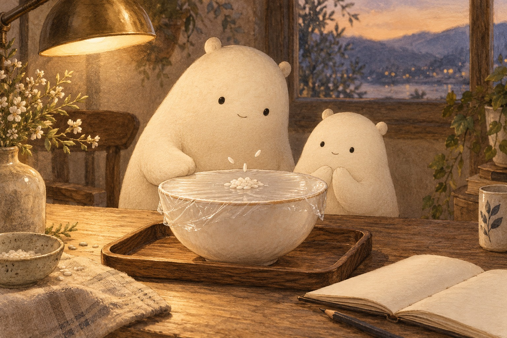
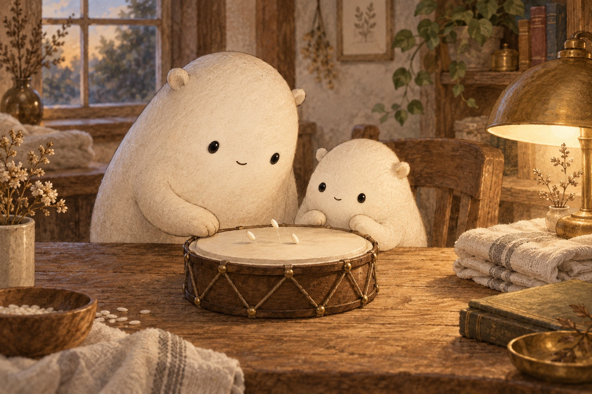
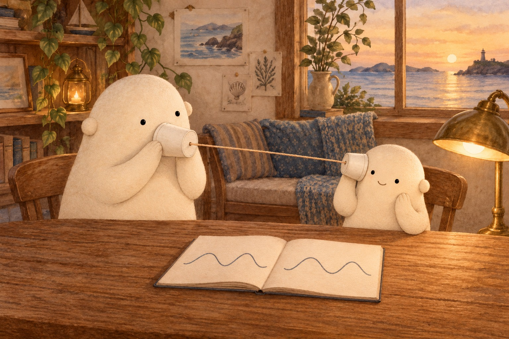

WONDER DAILY GRADE 3 · WRITING
Put a wiggle into words
How Speakers Turn Waves Into Sound · Curiosity day
Name __________________________ Date _______________
Give a clear command for watching rice move.



Draw the bowl before and after a gentle tap. Show the rice.
speaker · cone · coil · magnet · air · wave · ear · rice · gently
Hum … tell where to make a soft sound
Watch … tell which surface to observe
Draw … tell how to show the motion
Does your command begin with an action word, such as Hum, Watch, or Draw?